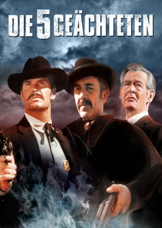
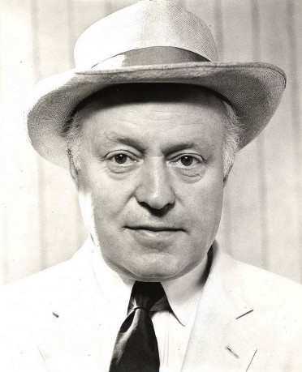

#3589 Die Fünf Geächteten
Alternativ: Hour of the Gun
 
 IMDB-Wertung: 6.7 / 10
IMDB-Wertung: 6.7 / 10  Metascore: 0
Metascore: 0 
Der Bandenboss Clanton versucht in den 80er-Jahren des 19. Jahrhunderts mit brutaler Gewalt, die Stadt Tombstone in Arizona unter seinen Einfluss zu bringen. Seine Leute schießen einen Bruder von Marshal Wyatt Earp zum Krüppel und töten einen anderen. Daraufhin macht Wyatt Earp erbarmungslos Jagd auf die Mörder. James Garner spielt die Hauptrolle in diesem Western von John Sturges über den berühmt-berüchtigten Kampf von Wyatt Earp mit der Clanton-Bande.
Jahr: 1967
Dauer: 97 Minuten
FSK: 12
Land: USA Studio: United ArtistsTonspuren: DD5.1 - ,
Untertitel:
Auflösung: 1080p (1920x824) Größe: 5591 MB
Genre: Western
Regisseur: John Sturges
Drehbuch: Shauna Cross
Soundtrack:
Darsteller:
 James Garner als Wyatt Earp
James Garner als Wyatt Earp Jason Robards als Doc Holliday
Jason Robards als Doc Holliday Robert Ryan als Ike Clanton
Robert Ryan als Ike Clanton Albert Salmi als Octavius Roy
Albert Salmi als Octavius Roy- Charles Aidman als Horace Sullivan
- Steve Ihnat als Andy Warshaw
- Michael Tolan als Pete Spence
 William Windom als Texas Jack Vermillion
William Windom als Texas Jack Vermillion William Schallert als Herman Spicer
William Schallert als Herman Spicer Karl Swenson als Dr. Charles Goodfellow
Karl Swenson als Dr. Charles Goodfellow- Monte Markham als Sherman McMasters
 Richard Bull als Thomas Fitch
Richard Bull als Thomas Fitch- Sam Melville als Morgan Earp
 Jon Voight als Curly Bill Brocius
Jon Voight als Curly Bill Brocius- Wilhelm Von Hohenzollern als John Peters Ringo,Johnny Ringo , uncredited
 Lonny Chapman als Turkey Creek Johnson
Lonny Chapman als Turkey Creek Johnson-  Larry Gates als John P. Clum
- Bill Fletcher als Jimmy Bryan
- Austin Willis als Anson Safford
- Frank Converse als Virgil Earp
 Robert Phillips als Frank Stilwell
Robert Phillips als Frank Stilwell- Edward Anhalt als Denver Doctor , uncredited
- Walter Gregg als Billy Clanton , uncredited
- Charlene Holt als Wife of Harry, the Barber , uncredited
- David Perna als Frank McLowery , uncredited
 Jorge Russek als Deputy Latigo , uncredited
Jorge Russek als Deputy Latigo , uncredited- Jim Sheppard als Tom McLowery , uncredited
Datei: X:\HD-Western-1960-1979\Fünf Geächteten, Die (1967, FSK12, 1920x824).mkv seit 07.05.2016
Festplatte: HD Eastern+Western
 Es gibt insgesamt 110 Filme in der Gruppe 'HD-Western-1960-1979'
Es gibt insgesamt 110 Filme in der Gruppe 'HD-Western-1960-1979'